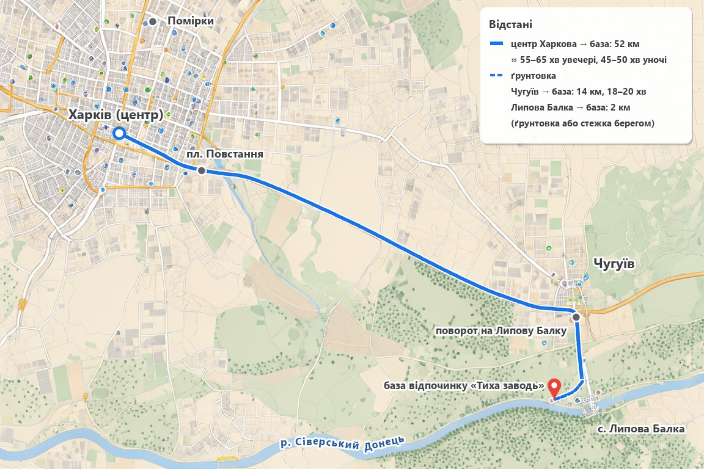

| Ділянка | Відстань | Час у дорозі |
|---|---|---|
| Харків (центр) → поворот на Липову Балку (в'їзд у Чугуїв), траса | 38 км | — |
| Чугуїв → поворот на Липову Балку → база (8 км асфальту + 6 км ґрунтовки) | 14 км | 18–20 хв |
| Харків (центр) → база | 52 км | 55–65 хв увечері в суботу; 45–50 хв уночі |
| Помірки → база | 60 км | ≈ 65 хв |
| Липова Балка (село) → база | 2 км | ґрунтовкою або береговою стежкою |